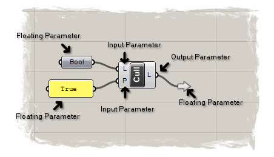

Overview
Parameters are a vital part of Grasshopper (the other being components). However, unlike components, it is far less likely that you’ll need to make your own parameters. Most components require only the native data types available inside Grasshopper. In those odd cases where you need to work with custom data, you’ll also need to create custom parameters that store that data. In this topic, we’ll create a parameter which can handle the TriStateType we discussed in the Simple Data Types guide.
Parameters are responsible for storing and distributing data. Components use them to collect existing data and output new data. Parameters can also be used to convert data from one type into another, even though on the atomic level the conversion is actually performed by the CastTo(T) and CastFrom methods on IGH_Goo. Most objects in the Special subcategory on the Grasshopper toolbar are basically parameters with extended GUIs. Parameters can also be used by themselves to store constant data or to redirect data into multiple streams.
Prerequisites
We will not be dealing with any of the basics of component development in this guide. Please start with the Your First Component guide and the Simple Component guide before starting this one.
Before you start, create a new class that derives from Grasshopper.Kernel.GH_Component, as outlined in the Simple Component guide.
Grasshopper.Kernel.IGH_Param
All parameters in Grasshopper must implement the IGH_Param interface. IGH_Param defines the bare minimum of what a parameter must be able to do. There are some interfaces that extend on IGH_Param, and also some abstract classes that partially implement the interface. Note that IGH_Param already inherits from IGH_ActiveObject, so it comes with a lot of baggage.
IGH_Param is quite an extensive interface, it defines nearly thirty properties and methods, some of which are quite tricky to implement. It is highly recommended that you do not directly implement IGH_Param, but derive from the abstract GH_Param(T) class instead. GH_Param(Of T) provides a basic implementation of IGH_Param and takes care of quite a lot of the nasty bits.
Here’s a list of things GH_Param<T> will happily do for you that you would otherwise have to do yourself:
- It will create default Attributes in case the parameter is floating.
- It will manage and synch the source and recipient lists.
- It can parse network topology to figure out dependency relationships.
- It will create, restore and clean proxy sources used during IO operations.
- It knows how to disassociate itself from adjacent objects in a network.
- It will provide getters and settings for typical parameter properties.
- It knows how to apply DataMapping algorithms to local data.
- It can handsomely format local data for display in tooltips.
- It will maintain a
GH_Structure(Of T)for local data storage. - It provides methods to cast data into the local type.
- It will accurately measure the time it takes to collect and process data.
- It knows how to collect and interweave data from multiple sources.
- It will correctly populate parameter pop-up menus.
- It will provide the correct StateTags for DataMapping settings.
- It will (de)serialize all local properties.
In other words, do not implement IGH_Param but derive from GH_Param<T>!
Types of Parameters
As mentioned before, parameters can be encountered as component inputs or outputs, but also as free-floating objects. These are not different classes, but rather the same class behaving in different ways. Every instance of IGH_Param has a Kind readonly property which describes the context of that instance:

In the image above, we see all three valid parameter Kinds (Input, Output and Floating). The “bool” object is a floating parameter of type Param_Boolean. The “P” on the left side of the “Cull” component is an input parameter of that very same type.
The Text Panel is also a floating parameter which derives from GH_Param(Of GH_String). In a way it is very similar to the String parameter (not shown), except it overrides the display and GUI of the default GH_Param class. The “L” on the right of the “Cull” component is an output parameter of the Param_GenericObject type (just like the “L” input parameter).
From this image we can see how versatile parameters can be. Parameters can have wildly different front-ends, they can expose and hide input and output grips at will, they can be part of a larger component or stand by themselves. They can even override so much of the default functionality that they no longer appear to be parameters at all (like the cluster output attached to “L”).
Data Inside Parameters
All parameters have the capacity to store data, this is, after all, their primary function. When you derive from GH_Param(T) there will be a protected member available within the class called m_data of type GH_Structure(T). Since GH_Structure<T> only accepts types of T that implement IGH_Goo, GH_Param<T> also only accepts types for T that implement IGH_Goo. This is why you cannot have a GH_Param<int> but must instead have GH_Param<GH_Integer>.
Data stored inside the m_data field is destroyed whenever the parameter expires. Parameters can be expired via several different mechanisms, but the most common ones are:
- One or more of the sources of a parameter expires.
- The component that owns the parameter expires.
- The user forces a complete solution recalculation (F5).
Because the data gets destroyed so readily, we call it Volatile Data. A lot of parameters in Grasshopper are also capable of storing Persistent Data, which is not destroyed whenever a solution runs. This allows parameters to define a collection of “constant” values. The “Set One XXXX”, “Set Multiple XXXX” and “Manage XXXX Collection” menu items in the parameter pop-up menu refer to persistent data.
When a parameter is not connected to any source parameters, the persistent data will be copied into the volatile data. If there is no persistent data, the parameter will remain empty and a runtime warning will be included to this effect.
GH_Param<T> however does not support persistent data. You can add your own mechanism for this (like Text Panel does) or you can choose to derive from more advanced classes like GH_PersistentParam(T). In this example, we’ll derive from GH_PersistentParamGH_PersistentParam<T> requires we implement two additional methods that allow users to specify persistent data. These methods are called from the default popup menu when the “Set One XXXX” and “Set Multiple XXXX” items are clicked.
So let’s start with deriving from GH_PersistentParam<T> and see where that takes us:
public class TriStateParameter : GH_PersistentParam<TriStateType>
{
// We need to supply a constructor without arguments that calls the base class constructor.
public TriStateParameter() :
base("TriState", "Tri", "Represents a collection of TriState values", "Params", "Primitive") { }
public override System.Guid ComponentGuid
{
// Always generate a new Guid, but never change it once
// you've released this parameter to the public.
get { return new Guid("{2FEEF1A2-A764-431d-8C78-9BF92C78BAE1}"); }
}
protected override Kernel.GH_GetterResult Prompt_Singular(ref TriStateType value)
{
// Todo, impement this function.
}
protected override Kernel.GH_GetterResult Prompt_Plural(ref List<TriStateType> values)
// Todo, impement this function.
}
}
Public Class TriStateParameter
Inherits GH_PersistentParam(Of TriStateType)
'We need to supply a constructor without arguments that calls the base class constructor.
Public Sub New()
'This is where we specify the name, description, tab and panel of this parameter.
MyBase.New("TriState", "Tri", "Represents a collection of TriState values", "Params", "Primitive")
End Sub
Public Overrides ReadOnly Property ComponentGuid() As System.Guid
Get
'Always generate a new Guid, but never change it once you've released this parameter to the public.
Return New Guid("{2FEEF1A2-A764-431d-8C78-9BF92C78BAE1}")
End Get
End Property
Protected Overrides Function Prompt_Singular(ByRef value As TriStateType) As Kernel.GH_GetterResult
'Todo, impement this function.
End Function
Protected Overrides Function Prompt_Plural(ByRef values As System.Collections.Generic.List(Of TriStateType)) As Kernel.GH_GetterResult
'Todo, impement this function.
End Function
End Class
That is essentially all there’s to it. Though you should also provide an Icon and an Exposure for this object. The Prompt_Singular and Prompt_Plural methods need to be implemented. In this case we’ll use standard Rhino Command Line interface to prompt for persistent values:
protected override Kernel.GH_GetterResult Prompt_Singular(ref TriStateType value)
{
Rhino.Input.Custom.GetOption() go = New Rhino.Input.Custom.GetOption();
go.SetCommandPrompt("TriState value");
go.AcceptNothing(true);
go.AddOption("True");
go.AddOption("False");
go.AddOption("Unknown");
switch (go.Get())
{
case Rhino.Input.GetResult.Option:
if (go.Option().EnglishName == "True") { value = new TriStateType(1); }
if (go.Option().EnglishName == "False") { value = new TriStateType(0); }
if (go.Option().EnglishName == "Unknown") { value = new TriStateType(-1); }
return GH_GetterResult.success;
case Rhino.Input.GetResult.Nothing:
return GH_GetterResult.accept;
default:
return GH_GetterResult.cancel;
}
}
protected overrides Kernel.GH_GetterResult Prompt_Plural(ref List<TriStateType> values)
{
values = new List<TriStateType>
while (true)
{
TriStateType val = null;
switch (Prompt_Singular(val))
case GH_GetterResult.success:
values.Add(val);
break;
case GH_GetterResult.accept:
return GH_GetterResult.success;
case GH_GetterResult.cancel:
values = null;
return GH_GetterResult.cancel;
}
}
}
Protected Overrides Function Prompt_Singular(ByRef value As TriStateType) As Kernel.GH_GetterResult
Dim go As New Rhino.Input.Custom.GetOption()
go.SetCommandPrompt("TriState value")
go.AcceptNothing(True)
go.AddOption("True")
go.AddOption("False")
go.AddOption("Unknown")
Select Case go.Get()
Case Rhino.Input.GetResult.Option
If (go.Option().EnglishName = "True") Then value = New TriStateType(1)
If (go.Option().EnglishName = "False") Then value = New TriStateType(0)
If (go.Option().EnglishName = "Unknown") Then value = New TriStateType(-1)
Return GH_GetterResult.success
Case Rhino.Input.GetResult.Nothing
Return GH_GetterResult.accept
Case Else
Return GH_GetterResult.cancel
End Select
End Function
Protected Overrides Function Prompt_Plural(ByRef values As List(Of TriStateType)) As Kernel.GH_GetterResult
values = New List(Of TriStateType)
Do
Dim val As TriStateType = Nothing
Select Case Prompt_Singular(val)
Case GH_GetterResult.success
values.Add(val)
Case GH_GetterResult.accept
Return GH_GetterResult.success
Case GH_GetterResult.cancel
values = Nothing
Return GH_GetterResult.cancel
End Select
Loop
End Function